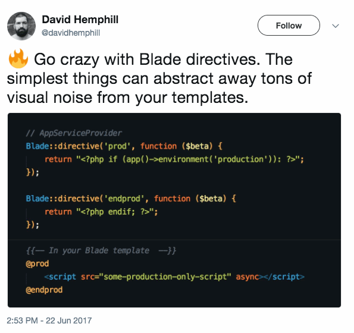

Blade templates
Sage uses Laravel's Blade templating engine.
Ever heard of Twig or Mustache? Blade accomplishes the same goals but also doesn't restrict you from using PHP directly in the templates.
Blade syntax is more elegant, concise, readable, more powerful, and easier to write than just PHP tags. You could even bind PHP data to Vue.js properties using Blade. The most popular PHP framework Laravel has been using blade for a while now, and has been nothing but great. You shouldn’t be against it just because it’s one more thing you have to learn. Functionality-wise, Blade is just amazing IMO.
— webber on Roots Discourse
Some of the benefits that come with using a templating engine include:
Template inheritance In previous versions of Sage we accomplished template inheritance with the theme wrapper. We're about to go over this more, but it comes down to staying DRY and avoiding repeating yourself across your template files.
Separation of data from views Pass your logic to template files instead of including PHP in your views files.
Automatically escaped data When you include data with Blade, such as with
{{ get_post_meta(get_the_ID(), 'example', true) }}(or{{ get_field('example') }}if you use ACF), the data is automatically escaped.This means that you don't need to use
esc_urlor other sanitizing functions in WordPress when outputting data in templates.Beautiful looking code The Blade syntax is pretty clean!
<article @php(post_class())> <header> <h2 class="entry-title"><a href="{{ get_permalink() }}">{{ get_the_title() }}</a></h2> @include('partials/entry-meta') </header> <div class="entry-summary"> @php(the_excerpt()) </div> </article>
There's a few WordPress themes and frameworks using Twig, such as Timber. We chose to use Blade because the implementation was very simple and straightforward. The amount of code required to pull it off was minimal. Several members of the Roots team have been using Blade on a regular basis on their Laravel projects and it's matured as project over the past several years.
Twig doesn't allow you to call PHP functions from templates, which is another reason why the Blade integration is so simple.
Template inheritance
In your typical WordPress theme, every page template will look something like the following:
get_header(); ?>
<div id="primary" class="content-area">
<main id="main" class="site-main" role="main">
<?php
while ( have_posts() ) : the_post();
get_template_part( 'template-parts/content', 'page' );
// If comments are open or we have at least one comment, load up the comment template.
if ( comments_open() || get_comments_number() ) :
comments_template();
endif;
endwhile; // End of the loop.
?>
</main><!-- #main -->
</div><!-- #primary -->
<?php
get_sidebar();
get_footer();
Even though we know that every template will take this base format and render the header, footer, sidebar calls each time, we still need to continuously repeat the code.
One of the biggest benefits of using Blade templates is the ability to remove any repeated markup from individual templates and put it into a single file. This file, resources/views/layouts/app.blade.php, becomes the base layout file. By doing this we can put the focus entirely on the page specific markup and loop, simplifying our templates to look like this:
@extends('layouts.app')
@section('content')
@while(have_posts()) @php(the_post())
@include('partials.page-header')
@include('partials.content-page')
@endwhile
@endsection
It’s neat. It’s tidy. You never need to make calls to get_header(), get_footer(), or get_sidebar() again. You can also refactor the base layout of your site by editing app.blade.php.
Passing data to templates
Sage includes a sage/template/{$class}/data filter that can be used to pass data to templates. This is the most simple way to pass data. The filter is based of body classes and can be used to target specific templates, for example:
sage/template/home/data— Home pagesage/template/about/data— About pagesage/template/page/data— All pagessage/template/post-type-archive-event/data—eventpost type archivesage/template/single-event/data—eventsingle post template
Note: Sage comes ready for you to modify the body_class by editing the filter at the top of app/filters.php.
In the example below we're passing the the values of two ACF fields, header_image and header_content, to all pages:
add_filter('sage/template/page/data', function (array $data) {
$data['header_image'] = get_field('header_image');
$data['header_content'] = get_field('header_content');
return $data;
});
In your Blade templates for pages you can now use {{ $header_image }} and {{ $header_content }} to output the data.
Global data
You can use sage('blade')->share to pass data to all views:
add_action('the_post', function() {
sage('blade')->share('links', [
'facebook' => 'https://facebook.com/rootswp',
'twitter' => 'https://twitter.com/rootswp'
]);
});
Now from within any Blade template you can use {{ $links['facebook'] }} and {{ $links['twitter'] }} to output the data.
Controller
Controller for Sage 9, written by Darren Jacoby, offers another method for passing data to templates. The Controller plugin works off of files in the app/controllers/ directory.
To pull off passing data to the same templates we used as examples above, we would setup the following files:
app/controllers/front-page.phpapp/controllers/archive-event.phpapp/controllers/single-event.phpapp/controllers/template-about.php
The Controller examples show the needed code to pass data to your templates. In the example below we're passing the values of three ACF fields to the template:
<?php // @ app/controllers/single-event.php
namespace App;
use Sober\Controller\Controller;
class SingleEvent extends Controller
{
public function eventStartingLocationAddress()
{
return get_field('event_starting_location_address');
}
public function eventStartingLocationDescription()
{
return get_field('event_starting_location_description');
}
public function eventDuration()
{
return wpautop(get_field('event_duration'));
}
}
These variables are now available to use in the single event template:
{!! $event_starting_location_address !!}
{!! $event_starting_location_description !!}
{!! $event_duration !!}
Global data with the Controller plugin is handled by the resources/controllers/app.php file:
<?php
namespace App;
use Sober\Controller\Controller;
class App extends Controller
{
public function headerImage()
{
return get_field('header_image');
}
public function headerContent()
{
return get_field('header_content');
}
}
Referencing front-end assets in templates
Sage includes an @asset directive to use in template files for referencing any of the files that get built from your resources/assets/ directory into the dist/ folder.
Typically you'll mostly be using the @asset directive to include images:
<img src="@asset('images/stella.jpg')" alt="Stella 🐶">
The output looks like:
<img src="http://example.dev/app/themes/sage/dist/images/stella_264f29a6.jpg" alt="Stella 🐶">
Blade directives
Directives are custom tags that you use in Blade templates. The @asset directive discussed above is registered in app/setup.php:
/**
* Create @asset() Blade directive
*/
sage('blade')->compiler()->directive('asset', function ($asset) {
return "<?= App\\asset_path({$asset}); ?>";
});
You can copy this same structure to setup your own directives. Here's an example of a @icon directive for Font Awesome:
/**
* Create @icon() Blade directive
*
* Usage: @icon('google-plus')
*/
sage('blade')->compiler()->directive('icon', function ($icon) {
return sprintf('<span aria-hidden="true" class="fa fa-fw fa-%s"></span>', trim($icon, "'"));
});
Another simple example is this @shortcode directive, courtesy of Julien Melissas:
/**
* Create @shortcode() Blade directive
*
* Usage: @shortcode('[share title="Share this post"]')
*/
sage('blade')->compiler()->directive('shortcode', function ($shortcode) {
return '<?= do_shortcode(\''. $shortcode .'\'); ?>';
});
The Useful Blade Directives thread on LaraCasts has examples of non-WordPress specific directives including @truncate, @varDump, and more.

Rendering Blade templates from PHP (eg. hooks/actions and filters)
Find yourself needing to render a Blade template with PHP? Use the template helper function available in the App namespace.
Here's an example of adding a [reviews] shortcode that renders the partials/reviews.blade.php file:
add_shortcode('reviews', function($atts) {
return \App\template('partials.reviews');
});
Here's an example of adding a Blade template to the end of a WooCommerce product:
add_action('woocommerce_after_single_product', function() {
echo \App\template('partials.product-bottom');
}, 10);
Need to also pass data from Controller to the shortcode? See MWDelaney's solution
Other tips
Return controller data to your dev tools console via Xdebug with Nat Hobson's ACF debugging technique
The
$loopvariable (available only withinforeachloops) can help with any conditionals you might need for things like first and last iterations, see Blade docsBlade
@stacksallow you to push to another view or layout, see Michael's thread on how they made his life betterRead through the Blade docs and maybe you'll discover something new
Read through the Best Practice / Resources for Blade thread from Roots Discourse or share something you've come across or made!
Use blade-svg-sage to easily use SVG's as either inline or with sprites